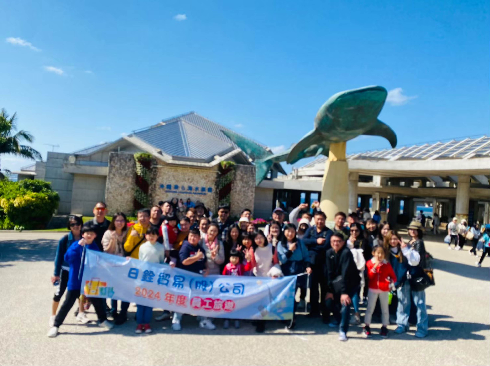

品牌故事
1987 年由洪墩清先生創立之【同燦貿易有限公司】，專營進口世界各地的優質原物料在台北【迪化街商圈】中開拓一片市場，也成為許多老餐飲人與烘焙人的共同記憶。後經年輕一輩接班成為現今的日銓貿易股份有限公司。

經營項目包含罐頭食品、堅果仁、水果乾，並配合現代人的飲食需求新增了義大利麵條等的西餐項目供應予台灣的食品製造業及餐飲業使用。自創立至今逾 35 年，「日銓貿易股份有限公司」始終以提供優質的食品原物料與服務為宗旨，並逐年送檢進口商品，只為確保商品品質及帶給顧客更好的體驗。
讓我們成為您最信賴的夥伴。
Your Most Trusted Food Partner.